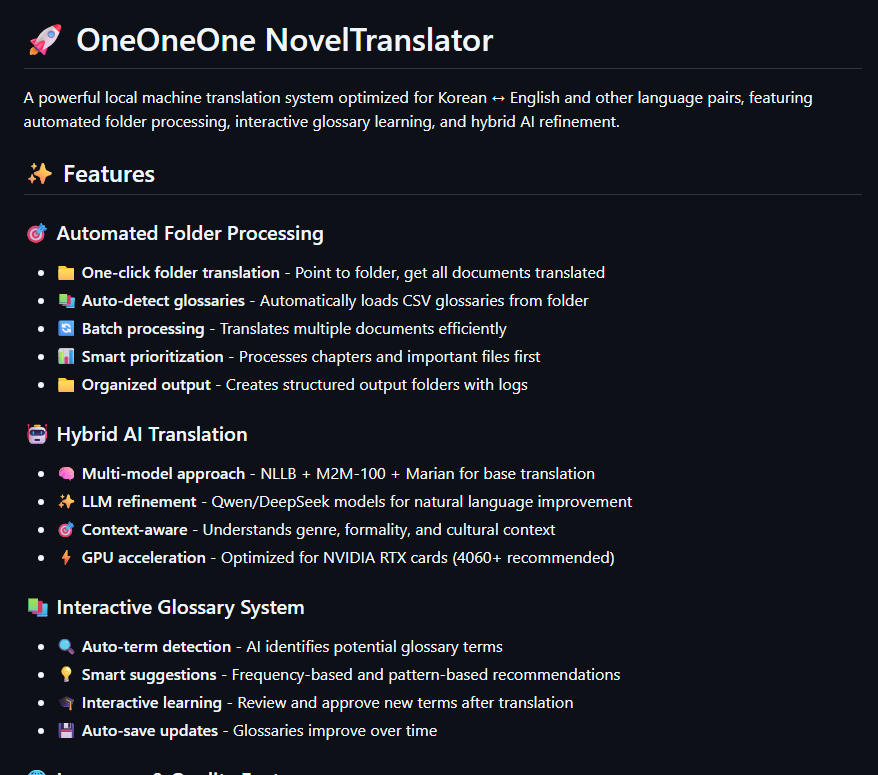

Tools & ML · Personal Project
Not a game, and included on purpose. Orchestrating multiple ML models into one pipeline is the same underlying skill as orchestrating multiple systems in an engine: know what each piece is good at, and manage the handoffs between them.

Two parallel approaches to the same problem: automated document translation that a non-technical person can actually run.
The local pipeline chains three separate translation models (NLLB, M2M-100, Marian) for a base pass, then refines the output with an LLM (Qwen or DeepSeek), all running on local hardware with GPU-optimized inference. It also includes an interactive glossary system that flags likely new terminology, suggests it, and learns from what gets approved or edited, so the glossary improves as it's used instead of staying static.
The cloud version trades local model orchestration for simplicity: it hits Azure AI's DeepSeek endpoint instead, wrapped in three separate interfaces (a desktop GUI, a Streamlit web app, and a CLI) all sharing the same core engine, with retry logic and structured logging built in. Both support multiple document formats (.txt, .pdf, .docx, .html), with the HTML path preserving document structure through translation instead of flattening it to plain text.